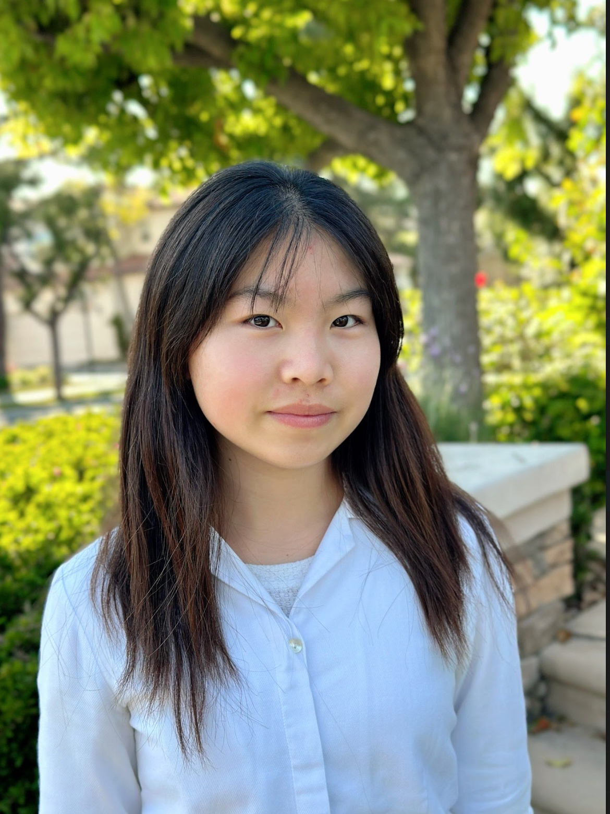
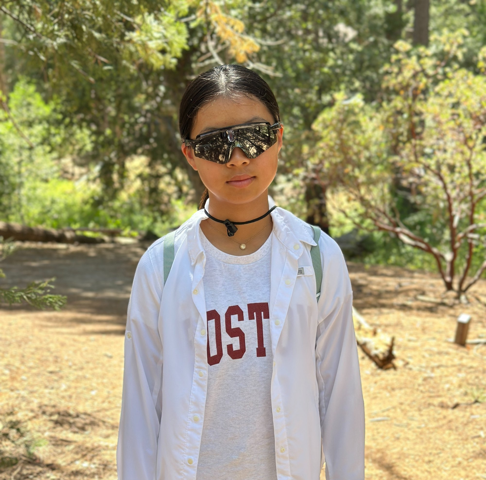

The Ready to Grow team is made up of passionate, committed students who each play a vital role in bringing our mission to life. Our board works collaboratively to design workshops, create educational resources, manage outreach, and ensure smooth operations across all departments. From planning events and developing caregiver materials to managing partnerships and social media, every member contributes their unique skills to help children and families thrive.
Our story began with our Executive Director, Annie Chien, whose vision and leadership shaped Ready to Grow from the ground up. Motivated by the lack of accessible developmental support for underserved children, Annie recruited a dedicated team, coordinated the first workshops, and built a culture rooted in compassion, innovation, and excellence. Her ability to inspire others and turn an idea into a growing movement continues to guide our team as we expand our impact across communities and beyond.

Executive Director
Annie is a rising junior at Beckman High School with a growing interest in pediatric health and child development. While shadowing a pediatrician, she was able to use tools like the Denver Developmental Screening Test to observe children's growth and possible delays. These visits helped identify developmental concerns, but Annie realized that children often lack the preventative and ongoing support needed to reach these milestones. Upon further investigation, she learned about the accessibility gap in underserved communities, a deficit that programs like HeadStart and Parents as Teachers are not fully eliminating. Annie was inspired by this experience to found Ready to Grow Initiative in hopes of providing a low-barrier, fully-supported environment for every child's development.

Deputy Executive Director
Megan is a rising freshman at Beckman High School with a strong passion for using technology to help others and support children's development. She has extensive experience in competitive robotics, where she learned problem-solving, teamwork, and creative thinking. Megan has also mentored younger students in robotics, giving her first-hand experience guiding children and helping them build confidence in STEM skills. She is excited to join the Ready to Grow Initiative because it allows her to combine her love for technology, mentorship, and community service to support children during their critical early years. Megan hopes to create engaging, hands-on experiences for children, provide guidance to families, and continue learning from the inspiring community of peers and educators involved in the initiative.
Resource Developer Director
Advaita is a rising junior at Beckman High School. She is thrilled to be a part of Ready to Grow because she believes that supporting children during their early years is key to building a brighter future. As someone passionate about working with kids and helping others, she is excited to contribute to this initiative and learn as much as she can along the way. She looks forward to creating meaningful connections with families and making a positive impact in the community.
Josephine's Photo
Workshop Planning Director
Josephine is an incoming junior at Beckman High School. Being a part of the Ready To Grow Initiative means so much to her because she is able to help and be there for children at some of the most important stages of their lives, helping guide them, and their parents, towards living a healthy and fulfilling life. She hopes to continue growing as a leader while making a lasting, positive impact on the families she serves.
Social Media Director
Shubhavi is a curious and driven student passionate about pediatrics, healthcare innovation, and the ethical questions that shape how we care for children. She thrives on turning ideas into action, whether it is leading projects, organizing outreach efforts, or creating spaces where young voices can share solutions for real world health challenges. With experience in creative problem solving and team coordination. At Ready to Grow she hopes to contribute fresh ideas, foster meaningful connections, and keep learning from the inspiring community around her. When she is not diving into projects, she can be found exploring new books, learning about child development and medical innovation, or sparking conversations about science, ethics, and the future of pediatric care.
Innovation & Impact Director
Sai is an incoming junior at Vista Ridge High School with a strong interest in Cardiology and General Surgery. He has gained meaningful experience tutoring underserved children while actively raising funds to support their education and development. In addition, Sai serves as a UNICEF advocate at his school, where he works to promote children's rights and organizes monthly activities to engage and educate his peers. Through his work with the Ready to Grow initiative, he hopes to provide children with the guidance, resources, and opportunities they need to thrive, making a tangible difference in their early development and long-term success.
Outreach Director
Pia is an incoming freshman at Orange County School of the Arts, with an interest in Dermatology. She is excited to be part of the Ready to Grow Initiative to help underserved children and give back to the community. Her experience of working with children comes from tutoring for math and science, and robotics mentorship. As part of the initiative, she hopes to contribute and provide support in any way she can.